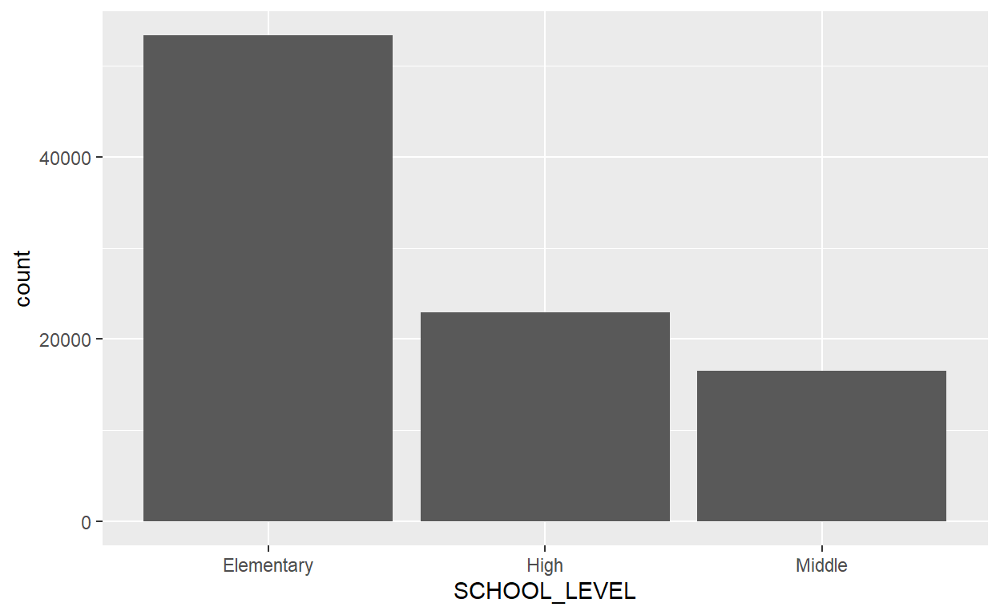

Blog posts about School Characteristics
Let’s read in the data and see what it looks like:
<<<<<<< HEADdata <- read.csv("C:/Users/wolpe/DACSS601August2021/_data/Public_School_Characteristics_2017-18.csv")
This dataset looks at the characteristics of various public schools across the United States. Among the variables in the dataset are identifying characteristics such as the name of the school, its school district, and its location; there are also several quantitative variables such as the number of students in each grade, as well as the overall number of students broken down in categories such as race and gender.
The data has 79 total columns and just over 100,000 rows. It is unlikely that all of this info will be useful, so in the next section we can see if the data can be cleaned and subset to be more useful to the project.
The data is definitely unclean, let’s filter out some stuff so that we have more complete data.
data_clean <- data %>%
filter(!is.na(TOTAL) & TOTAL > 0 & !is.na(FTE) & FTE > 0 & STUTERATIO < 500) %>%
filter(SCHOOL_TYPE_TEXT == "Regular school" & VIRTUAL == "Not a virtual school") %>%
filter(SCHOOL_LEVEL == "High" | SCHOOL_LEVEL == "Middle" | SCHOOL_LEVEL == "Elementary") %>%
filter((is.na(G13) | G13 == 0) & (is.na(PK) | PK == 0)) %>%
filter(!is.na(STABR) & !is.na(SCH_NAME))
head(data_clean)
ï..X Y OBJECTID NCESSCH NMCNTY
1 -151.0701 60.49144 3 20039000448 Kenai Peninsula Borough
2 -151.2791 60.56828 4 20039000463 Kenai Peninsula Borough
3 -166.5224 53.86895 15 20072000340 Aleutians West Census Area
4 -166.5296 53.87267 16 20072000661 Aleutians West Census Area
5 -161.7707 60.80436 18 20000100207 Bethel Census Area
6 -161.7704 60.80258 19 20000100208 Bethel Census Area
SURVYEAR STABR LEAID ST_LEAID
1 2017-2018 AK 200390 AK-24
2 2017-2018 AK 200390 AK-24
3 2017-2018 AK 200720 AK-47
4 2017-2018 AK 200720 AK-47
5 2017-2018 AK 200001 AK-31
6 2017-2018 AK 200001 AK-31
LEA_NAME
1 Kenai Peninsula Borough School District
2 Kenai Peninsula Borough School District
3 Unalaska City School District
4 Unalaska City School District
5 Lower Kuskokwim School District
6 Lower Kuskokwim School District
SCH_NAME LSTREET1
1 Soldotna Montessori Charter School 158 E Park Ave
2 Kaleidoscope School of Arts & Science 549 N Forest Dr
3 Eagle's View Elementary School 503 East Broadway
4 Unalaska Jr/Sr High School 55 E Broadway
5 Gladys Jung Elementary 1007 Ron Edwards Memorial Dr
6 Bethel Regional High School 1006 Ron Edwards Memorial Dr
LSTREET2 LSTREET3 LCITY LSTATE LZIP LZIP4 PHONE GSLO
1 Soldotna AK 99669 NA (907)260-9221 KG
2 Kenai AK 99611 NA (907)283-0804 KG
3 Unalaska AK 99685 NA (907)581-3979 PK
4 Unalaska AK 99685 NA (907)581-1222 07
5 Bethel AK 99559 NA (907)543-4440 03
6 Bethel AK 99559 NA (907)543-3957 07
GSHI VIRTUAL TOTFRL FRELCH REDLCH PK KG G01 G02 G03
1 06 Not a virtual school 43 23 20 NA 23 23 27 22
2 05 Not a virtual school 69 50 19 NA 40 43 42 46
3 06 Not a virtual school 53 35 18 0 32 30 36 33
4 12 Not a virtual school 38 27 11 NA NA NA NA NA
5 06 Not a virtual school 294 294 0 NA NA NA NA 97
6 12 Not a virtual school 373 373 0 NA NA NA NA NA
G04 G05 G06 G07 G08 G09 G10 G11 G12 G13 TOTAL MEMBER AM HI BL WH
1 25 28 19 NA NA NA NA NA NA NA 167 167 8 5 0 136
2 46 43 NA NA NA NA NA NA NA NA 260 260 16 14 3 168
3 31 26 29 NA NA NA NA NA NA NA 217 217 23 30 2 56
4 NA NA NA 30 25 26 38 36 29 NA 184 184 24 21 0 38
5 75 79 90 NA NA NA NA NA NA NA 341 341 284 6 1 44
6 NA NA NA 94 90 106 52 63 70 NA 475 475 418 7 1 38
HP TR FTE LATCOD LONCOD ULOCALE STUTERATIO
1 0 15 10.35 60.49144 -151.0702 33-Town: Remote 16.14
2 0 56 16.75 60.56828 -151.2791 33-Town: Remote 15.52
3 13 3 13.50 53.86895 -166.5225 43-Rural: Remote 16.07
4 8 0 14.50 53.87267 -166.5296 43-Rural: Remote 12.69
5 0 1 22.13 60.80436 -161.7707 41-Rural: Fringe 15.41
6 0 2 33.05 60.80258 -161.7704 41-Rural: Fringe 14.37
STITLEI AMALM AMALF ASALM ASALF HIALM HIALF BLALM BLALF
1 Not Applicable 4 4 0 3 2 3 0 0
2 Not Applicable 10 6 1 2 6 8 3 0
3 Not Applicable 11 12 52 38 14 16 0 2
4 Not Applicable 12 12 52 41 12 9 0 0
5 Yes 141 143 2 3 4 2 0 1
6 Yes 221 197 5 4 4 3 0 1
WHALM WHALF HPALM HPALF TRALM TRALF TOTMENROL TOTFENROL STATUS UG
1 58 78 0 0 7 8 71 96 1 NA
2 82 86 0 0 26 30 128 132 1 NA
3 26 30 7 6 1 2 111 106 1 NA
4 23 15 4 4 0 0 103 81 1 NA
5 21 23 0 0 0 1 168 173 1 NA
6 20 18 0 0 1 1 251 224 1 NA
AE SCHOOL_TYPE_TEXT SY_STATUS_TEXT SCHOOL_LEVEL AS
1 NA Regular school Currently operational Elementary 3
2 NA Regular school Currently operational Elementary 3
3 NA Regular school Currently operational Elementary 90
4 NA Regular school Currently operational High 93
5 NA Regular school Currently operational Elementary 5
6 NA Regular school Currently operational High 9
CHARTER_TEXT MAGNET_TEXT
1 Yes No
2 Yes No
3 No No
4 No No
5 No No
6 No NoWith filtering, we now have a subset of the original data that will be much more useful for analysis. The schools were filtered to include only regular, non-virtual schools at the elementary, middle, and high school levels. It also removed any schools that had students younger than kindergarten (PK) or those past their senior year of high school (G13).
There is still an issue however with student to teacher ratios, so let’s look at a distribution of that:
data_clean %>%
summarise(quantile = c(0, 0.005, 0.025, 0.5, 0.975, 0.995, 1), quant.val = quantile(STUTERATIO, c(0, 0.005, 0.025, 0.5, 0.975, 0.995, 1)))
quantile quant.val
1 0.000 0.1900
2 0.005 4.8200
3 0.025 8.1800
4 0.500 15.7700
5 0.975 27.0000
6 0.995 34.4274
7 1.000 485.0000Looking at the distribution, we see that 99% of the dataset falls between a student to teacher ratio of 4.82 and 34.4274, which we can use as a boundary to remove outliers of this variable from the dataset.
data_clean <- data_clean %>%
filter(STUTERATIO >= 4.82 & STUTERATIO <= 34.4274)
Now let’s subset the columns in the dataset to only include those that interest this project.
data_sub <- data_clean %>%
select(SCH_NAME, STABR, GSLO, GSHI, G01, G02, G03, G04, G05, G06, G07, G08, G09, G10, G11, G12, TOTAL, AM, HI, BL, WH, HP, TR, FTE, STUTERATIO, AMALM, AMALF, ASALM, ASALF, HIALM, HIALF, BLALM, BLALF, WHALM, WHALF, HPALM, HPALF, TRALM, TRALF, TOTMENROL, TOTFENROL, SCHOOL_LEVEL)
head(data_sub)
SCH_NAME STABR GSLO GSHI G01 G02 G03
1 Soldotna Montessori Charter School AK KG 06 23 27 22
2 Kaleidoscope School of Arts & Science AK KG 05 43 42 46
3 Eagle's View Elementary School AK PK 06 30 36 33
4 Unalaska Jr/Sr High School AK 07 12 NA NA NA
5 Gladys Jung Elementary AK 03 06 NA NA 97
6 Bethel Regional High School AK 07 12 NA NA NA
G04 G05 G06 G07 G08 G09 G10 G11 G12 TOTAL AM HI BL WH HP TR FTE
1 25 28 19 NA NA NA NA NA NA 167 8 5 0 136 0 15 10.35
2 46 43 NA NA NA NA NA NA NA 260 16 14 3 168 0 56 16.75
3 31 26 29 NA NA NA NA NA NA 217 23 30 2 56 13 3 13.50
4 NA NA NA 30 25 26 38 36 29 184 24 21 0 38 8 0 14.50
5 75 79 90 NA NA NA NA NA NA 341 284 6 1 44 0 1 22.13
6 NA NA NA 94 90 106 52 63 70 475 418 7 1 38 0 2 33.05
STUTERATIO AMALM AMALF ASALM ASALF HIALM HIALF BLALM BLALF WHALM
1 16.14 4 4 0 3 2 3 0 0 58
2 15.52 10 6 1 2 6 8 3 0 82
3 16.07 11 12 52 38 14 16 0 2 26
4 12.69 12 12 52 41 12 9 0 0 23
5 15.41 141 143 2 3 4 2 0 1 21
6 14.37 221 197 5 4 4 3 0 1 20
WHALF HPALM HPALF TRALM TRALF TOTMENROL TOTFENROL SCHOOL_LEVEL
1 78 0 0 7 8 71 96 Elementary
2 86 0 0 26 30 128 132 Elementary
3 30 7 6 1 2 111 106 Elementary
4 15 4 4 0 0 103 81 High
5 23 0 0 0 1 168 173 Elementary
6 18 0 0 1 1 251 224 HighIt may be useful to be the top several rows for certain columns, in this script, we look at the top 6 schools ordered based on their student to teacher ratio.
SCH_NAME STABR GSLO GSHI G01 G02 G03 G04 G05
1 George Jr Republic HS PA 09 12 NA NA NA NA NA
2 Medicine Bow Elementary WY KG 06 1 4 0 3 2
3 LONE STAR UNDIVIDED HIGH SCHOOL CO 09 12 NA NA NA NA NA
4 VERDIGRE MIDDLE SCHOOL NE 07 08 NA NA NA NA NA
5 Judith Gap High School MT 09 12 NA NA NA NA NA
6 Mobile Elementary School AZ KG 08 5 0 5 1 3
G06 G07 G08 G09 G10 G11 G12 TOTAL AM HI BL WH HP TR FTE
1 NA NA NA 54 54 88 83 279 1 36 135 80 0 26 57.94
2 1 NA NA NA NA NA NA 11 0 0 0 11 0 0 2.28
3 NA NA NA 16 5 4 4 29 NA 3 NA 26 NA NA 6.01
4 NA 4 10 NA NA NA NA 14 2 0 0 12 0 0 2.90
5 NA NA NA 4 3 3 3 13 0 1 0 12 0 0 2.68
6 1 0 2 NA NA NA NA 19 0 4 5 9 0 1 3.90
STUTERATIO AMALM AMALF ASALM ASALF HIALM HIALF BLALM BLALF WHALM
1 4.82 1 0 1 0 36 0 135 0 80
2 4.82 0 0 0 0 0 0 0 0 4
3 4.83 NA NA NA NA 2 1 NA NA 13
4 4.83 1 1 0 0 0 0 0 0 5
5 4.85 0 0 0 0 1 0 0 0 5
6 4.87 0 0 0 0 3 1 2 3 5
WHALF HPALM HPALF TRALM TRALF TOTMENROL TOTFENROL SCHOOL_LEVEL
1 0 0 0 26 0 279 0 High
2 7 0 0 0 0 4 7 Elementary
3 13 NA NA NA NA 15 14 High
4 7 0 0 0 0 6 8 Middle
5 7 0 0 0 0 6 7 High
6 4 0 0 0 1 10 9 ElementaryAnd now we look at the bottom 6 schools with the highest student-teacher ratio.
SCH_NAME STABR GSLO
58631 College of So. NV HS East NV 11
58632 Everest High School OH 09
58633 Birch Grove Intermediate CA 03
58634 John C. Fremont Elementary CA KG
58635 Aspire Benjamin Holt College Preparatory Academy CA 09
58636 Hamburg Middle School IA 06
GSHI G01 G02 G03 G04 G05 G06 G07 G08 G09 G10 G11 G12 TOTAL AM
58631 12 NA NA NA NA NA NA NA NA NA NA 102 68 170 NA
58632 12 NA NA NA NA NA NA NA NA 20 24 17 7 68 0
58633 06 NA NA 109 118 119 112 NA NA NA NA NA NA 458 1
58634 08 85 76 77 95 115 113 91 102 NA NA NA NA 867 13
58635 12 NA NA NA NA NA NA NA NA 122 130 94 72 418 5
58636 08 NA NA NA NA NA 14 18 13 NA NA NA NA 45 NA
HI BL WH HP TR FTE STUTERATIO AMALM AMALF ASALM ASALF HIALM
58631 85 23 42 4 5 5.00 34.00 NA NA 3 8 42
58632 4 37 24 0 3 2.00 34.00 0 0 0 0 1
58633 180 28 52 6 29 13.40 34.18 1 NA 93 69 95
58634 759 26 33 4 6 25.24 34.35 8 5 14 12 400
58635 184 23 83 3 16 12.17 34.35 1 4 55 49 87
58636 7 NA 37 NA 1 1.31 34.35 NA NA NA NA 3
HIALF BLALM BLALF WHALM WHALF HPALM HPALF TRALM TRALF TOTMENROL
58631 43 5 18 17 25 1 3 2 3 70
58632 3 27 10 15 9 0 0 1 2 44
58633 85 12 16 30 22 5 1 18 11 254
58634 359 16 10 19 14 1 3 4 2 462
58635 97 10 13 35 48 3 NA 4 12 195
58636 4 NA NA 17 20 NA NA NA 1 20
TOTFENROL SCHOOL_LEVEL
58631 100 High
58632 24 High
58633 204 Elementary
58634 405 Elementary
58635 223 High
58636 25 MiddleNow let’s take a look at some summary of the dataset in terms of its student-teacher ratio in each state.
data_stats <- data_sub %>%
group_by(STABR) %>%
summarise(STABR = STABR, AvgRatio = mean(STUTERATIO), SDRatio = sd(STUTERATIO))
data_summary <- distinct(data_stats)
data_summary
# A tibble: 53 x 3
# Groups: STABR [53]
STABR AvgRatio SDRatio
<chr> <dbl> <dbl>
1 AK 16.0 3.02
2 AL 18.1 2.64
3 AR 13.2 2.81
4 AZ 18.9 3.77
5 CA 23.4 3.47
6 CO 16.4 3.71
7 CT 12.0 1.92
8 DC 13.1 4.02
9 DE 14.9 2.63
10 FL 17.2 3.66
# ... with 43 more rowsFor this section we need to look deeper into two variables from the dataset, for this I want to look at school type and student to teacher ratio.
Taken from the NCES website: “The National Center for Education Statistics’ (NCES) Common Core of Data (CCD) program is an annual collection of basic administrative characteristics for all public schools, school districts, and state education agencies in the United States. These characteristics are reported by state education officials and include directory information, number of students, number of teachers, grade span, and other conditions. The NCES Education Demographic and Geographic Estimate (EDGE) program develops annually updated point locations (latitude and longitude) for public elementary and secondary schools included in the CCD. The NCES EDGE program collaborates with the U.S. Census Bureau’s Education Demographic, Geographic, and Economic Statistics (EDGE) Branch to develop point locations for schools and school district administrative offices based on reported physical addresses” (NCES).
Let’s take a look at all the different levels of schools from the original, uncleaned dataset.
data %>%
group_by(SCHOOL_LEVEL) %>%
summarise(SCHOOL_LEVEL = SCHOOL_LEVEL, count.type = n()) %>%
distinct()
# A tibble: 10 x 2
# Groups: SCHOOL_LEVEL [10]
SCHOOL_LEVEL count.type
<chr> <int>
1 Adult Education 28
2 Elementary 53287
3 High 22977
4 Middle 16506
5 Not Applicable 796
6 Not Reported 1113
7 Other 3824
8 Prekindergarten 1430
9 Secondary 602
10 Ungraded 166For the dataset I wanted to focus on the most common types of school, which immediately meant filtering out adult education, secondary, and ungraded schools. This also left not applicable, not reported, and other in the dataset, which also should be removed. The last four remaining categories were elementary, high, middle, and prekindergarten. Prekindergarten schools were then removed to focus on the main three types of public schools as well as because of the number of fewer schools of this type.
Now let’s filter out these unwanted categories and look at the breakdown of schook type.
data %>%
filter(SCHOOL_LEVEL == "High" | SCHOOL_LEVEL == "Middle" | SCHOOL_LEVEL == "Elementary") %>%
ggplot(aes(x = SCHOOL_LEVEL)) + geom_bar()

This looks significantly cleaner and more organized than with all the other unused variables.
Let’s start by looking at some summary statistics and a barplot of student to teacher ratio from the unclean dataset:
data %>%
summarise(count = n(), mean.val = mean(STUTERATIO), sd.val = sd(STUTERATIO), median.val = median(STUTERATIO))
count mean.val sd.val median.val
1 100729 NA NA NAWe see that there are probably a large amount of NA values, so we first need to clean that.
data_stuteratio <- data %>%
filter(!is.na(STUTERATIO))
data_stuteratio %>%
summarise(count = n(), mean.val = mean(STUTERATIO), sd.val = sd(STUTERATIO), median.val = median(STUTERATIO))
count mean.val sd.val median.val
1 93894 16.94477 85.73974 15.33Now we are getting valid statistics, but the standard deviation appears to be very large, over 5 times the mean and median! Let’s take a look at some quantiles to see what the breakdown is.
quantiles <- c(0, 0.005, 0.025, 0.05, 0.1, 0.25, 0.5, 0.75, 0.9, 0.95, 0.975, 0.995, 1)
data_stuteratio %>%
summarise(quantiles = quantiles, value = quantile(STUTERATIO, quantiles))
quantiles value
1 0.000 0.00000
2 0.005 0.00000
3 0.025 5.10325
4 0.050 8.02000
5 0.100 10.33000
6 0.250 12.85000
7 0.500 15.33000
8 0.750 18.18000
9 0.900 22.50000
10 0.950 25.11000
11 0.975 27.50000
12 0.995 50.30070
13 1.000 22350.00000We see that our wide range of values that cause a large standard deviation is probably due to the top 0.5% of values for student to teacher ration, as the bottom 99.5% are all equal to or less than 50.3, with the top 0.5% ranging from that to over 20,000! To look at more meaningful data, we can select the middle 99% of the data to use.
data_stuteratio <- data_stuteratio %>%
filter(STUTERATIO <= 50.3007)
data_stuteratio %>%
summarise(count = n(), mean.val = mean(STUTERATIO), sd.val = sd(STUTERATIO), median.val = median(STUTERATIO))
count mean.val sd.val median.val
1 93424 15.71938 5.2405 15.31The standard deviation for this value now makes a lot more sense, and the median has moved closer to the mean. Let’s take a look at a barplot to see the distribution.
The data still appears somewhat skewed, but not in a way that will negatively affect our analysis.
NOTE: In the actual filtering of data the cutoffs used for STUTERATIO are different because of other filtering, in actuality the cutoffs of 4.82 and 34.4274 will be used.
\(NCES. Public School characteristics.\space2017-18.\space Common Core Data Set. https://data-nces.opendata.arcgis.com/datasets/nces::public-school-characteristics-2017-18/about\)